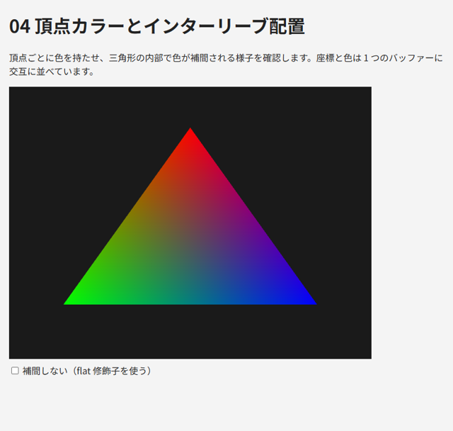
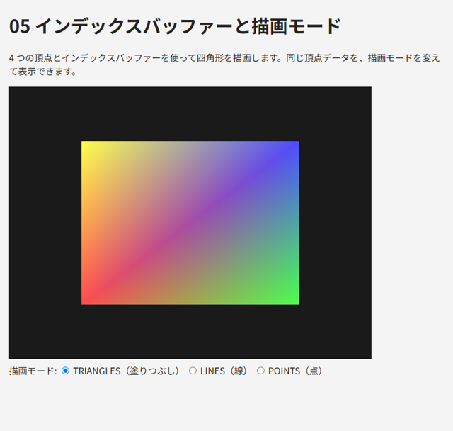

5. バッファーと頂点データ
この章では、頂点の座標や色などのデータを GPU に転送し、頂点シェーダーに渡す方法を説明します。
5.1. 頂点バッファー
頂点シェーダーが受け取る頂点データは、GPU のメモリ上のバッファーに格納します。頂点データを格納するバッファーを、頂点バッファー（VBO: Vertex Buffer Object）と呼びます。
1const positions = new Float32Array([
2 0.0, 0.6, // 頂点 0
3 -0.6, -0.5, // 頂点 1
4 0.6, -0.5, // 頂点 2
5]);
6const buffer = gl.createBuffer(); // バッファーを作る
7gl.bindBuffer(gl.ARRAY_BUFFER, buffer); // ARRAY_BUFFER にバインドする
8gl.bufferData(gl.ARRAY_BUFFER, positions, gl.STATIC_DRAW); // データを転送する
WebGL の多くの関数は、操作対象のオブジェクトを引数で受け取るのではなく、あらかじめバインド（結び付け）されたオブジェクトを操作します。上の例では、gl.bindBuffer で buffer を gl.ARRAY_BUFFER という「差し込み口」にバインドし、gl.bufferData は gl.ARRAY_BUFFER にバインドされているバッファーにデータを転送します。
データは JavaScript の通常の配列ではなく、Float32Array などの型付き配列で渡します。GLSL の float は 32 ビットの浮動小数点数なので、Float32Array を使います。
gl.bufferData の第 3 引数は、データをどのように使うかを GPU に伝えるヒントです（表 5.1）。ヒントに反した使い方をしてもエラーにはなりませんが、性能に影響することがあります。
値 |
意味 |
|---|---|
|
一度設定したら、ほとんど変更しません（形状のデータなど） |
|
頻繁に変更します（ |
|
1 回か数回しか使いません |
5.2. 頂点属性の設定
バッファーに格納したデータを、頂点シェーダーのどの変数に、どのような形式で渡すかを設定します。これには gl.vertexAttribPointer を使います。
1gl.bindBuffer(gl.ARRAY_BUFFER, buffer);
2gl.enableVertexAttribArray(0); // location = 0 の頂点属性を有効にする
3gl.vertexAttribPointer(0, 2, gl.FLOAT, false, 0, 0); // バッファーから float を 2 個ずつ読む
gl.vertexAttribPointer は、呼び出した時点で gl.ARRAY_BUFFER にバインドされているバッファーを、指定した頂点属性のデータの読み出し元として記録します。引数の意味を表 5.2 に示します。
引数 |
意味 |
|---|---|
|
頂点属性の location。シェーダーの |
|
1 頂点あたりの成分の数（1 ～ 4）。 |
|
1 成分のデータ型。 |
|
整数型のデータを 0 ～ 1（符号付きなら -1 ～ 1）に正規化するか。 |
|
ある頂点のデータの先頭から、次の頂点のデータの先頭までのバイト数。0 の場合は、データが隙間なく並んでいるものとして自動的に計算されます |
|
バッファーの先頭から、最初のデータまでのバイト数 |
シェーダー側で layout(location = ...) を指定しない場合は、gl.getAttribLocation(program, "a_position") でリンク時に割り当てられた location を取得します。本書では、location をシェーダーとプログラムの両方で固定できる layout 修飾子を使います。
注釈
gl.enableVertexAttribArray を呼ばずに描画すると、その頂点属性はバッファーから読まれず、すべての頂点で同じ定数値になります。定数値は gl.vertexAttrib4f などで設定でき、既定値は (0, 0, 0, 1) です。第 12 章のサンプル 15_instancing.html では、この性質を比較用の描画に使っています。
5.3. 頂点配列オブジェクト（VAO）
物体ごとに頂点属性の設定を毎回やり直すのは手間がかかり、処理も遅くなります。そこで、頂点属性の設定をまとめて保存しておく VAO（Vertex Array Object、頂点配列オブジェクト）を使います。
1// 初期化時: VAO をバインドした状態で頂点属性を設定すると、その設定が VAO に記録される
2const vao = gl.createVertexArray();
3gl.bindVertexArray(vao);
4gl.bindBuffer(gl.ARRAY_BUFFER, buffer);
5gl.enableVertexAttribArray(0);
6gl.vertexAttribPointer(0, 2, gl.FLOAT, false, 0, 0);
7gl.bindVertexArray(null); // 誤って変更しないようにバインドを解除する
8
9// 描画時: VAO をバインドするだけで、記録した設定がすべて復元される
10gl.bindVertexArray(vao);
11gl.drawArrays(gl.TRIANGLES, 0, 3);
VAO に記録されるのは、各頂点属性の有効・無効、gl.vertexAttribPointer で設定した内容（読み出し元のバッファーを含む）、およびインデックスバッファー（後述）のバインドです。gl.ARRAY_BUFFER のバインドそのものは VAO に記録されないことに注意してください。
本書では、描画する形状ごとに VAO を 1 つ作ります。
5.4. インターリーブ配置
頂点に座標と色など複数の属性を持たせる場合、データの並べ方には 2 通りあります。
属性ごとに別々のバッファーに格納します（例: 座標のバッファーと色のバッファー）。
1 つのバッファーに、頂点ごとに属性を交互に並べます（例: x, y, r, g, b, x, y, r, g, b, ...）。これをインターリーブ配置と呼びます。
インターリーブ配置では、stride に 1 頂点分のバイト数を、offset に頂点の先頭からその属性までのバイト数を指定します。サンプル 04_vertex_color.html から、該当部分を示します。
107 // 1 頂点あたり x, y, r, g, b の 5 個の float を交互に並べる（インターリーブ配置）
108 const vertices = new Float32Array([
109 // x y r g b
110 0.0, 0.7, 1.0, 0.0, 0.0, // 上: 赤
111 -0.7, -0.6, 0.0, 1.0, 0.0, // 左下: 緑
112 0.7, -0.6, 0.0, 0.0, 1.0, // 右下: 青
113 ]);
114 const buffer = gl.createBuffer();
115 gl.bindBuffer(gl.ARRAY_BUFFER, buffer);
116 gl.bufferData(gl.ARRAY_BUFFER, vertices, gl.STATIC_DRAW);
117
118 const FLOAT_SIZE = Float32Array.BYTES_PER_ELEMENT; // 4 バイト
119 const stride = 5 * FLOAT_SIZE; // 1 頂点分のバイト数（20 バイト）
120
121 const vao = gl.createVertexArray();
122 gl.bindVertexArray(vao);
123 // a_position: 各頂点の先頭から float を 2 個
124 gl.enableVertexAttribArray(0);
125 gl.vertexAttribPointer(0, 2, gl.FLOAT, false, stride, 0);
126 // a_color: 各頂点の 8 バイト目から float を 3 個
127 gl.enableVertexAttribArray(1);
128 gl.vertexAttribPointer(1, 3, gl.FLOAT, false, stride, 2 * FLOAT_SIZE);
129 gl.bindVertexArray(null);
インターリーブ配置は、1 つの頂点のデータがメモリ上でまとまっているため、GPU のキャッシュの効率が良くなる場合があります。一方、属性ごとに分ける方法は、一部の属性だけを更新しやすいという利点があります。どちらを使っても描画結果は同じです。
04_vertex_color.html では、3 つの頂点にそれぞれ赤・緑・青を設定しています。頂点シェーダーが out で出力した色は、ラスタライズの際に三角形の内部で補間されるため、三角形の内部では色が滑らかに変化します。チェックボックスで flat 修飾子を付けたシェーダーに切り替えると補間が行われなくなり、三角形全体が最後の頂点（右下）の色で塗られます。

図 5.1 04_vertex_color.html の実行結果
5.5. インデックスバッファー
四角形は 2 つの三角形で描画します。三角形ごとに頂点を並べると 6 個の頂点が必要ですが、そのうち 2 個は重複しています。立方体では 12 個の三角形で 36 個の頂点が必要になり、重複はさらに増えます。
重複をなくすには、頂点データとは別に、三角形を構成する頂点の番号（インデックス）を並べたインデックスバッファーを使います。インデックスバッファーは gl.ELEMENT_ARRAY_BUFFER にバインドし、描画には gl.drawArrays の代わりに gl.drawElements を使います。
115 // インデックス: 先頭 6 個が TRIANGLES 用、続く 10 個が LINES 用
116 const indices = new Uint16Array([
117 0, 1, 2, 0, 2, 3, // 三角形 2 つ（どちらも反時計回り）
118 0, 1, 1, 2, 2, 3, 3, 0, 0, 2, // 線分 5 本
119 ]);
133 // ELEMENT_ARRAY_BUFFER のバインドは VAO に記録されるので、VAO をバインドした状態で行う
134 const indexBuffer = gl.createBuffer();
135 gl.bindBuffer(gl.ELEMENT_ARRAY_BUFFER, indexBuffer);
136 gl.bufferData(gl.ELEMENT_ARRAY_BUFFER, indices, gl.STATIC_DRAW);
gl.ELEMENT_ARRAY_BUFFER のバインドは VAO に記録されるので、VAO をバインドした状態でインデックスバッファーをバインドします。
gl.drawElements(mode, count, type, offset) の type はインデックスの型です。Uint16Array なら gl.UNSIGNED_SHORT を指定し、頂点の番号は 0 ～ 65535 の範囲に限られます。それより多くの頂点を使う場合は Uint32Array と gl.UNSIGNED_INT を使います。offset はバイト単位で指定することに注意してください。
5.6. 描画モード
gl.drawArrays と gl.drawElements の第 1 引数で、頂点をどのように結ぶかを指定します（表 5.3）。
モード |
内容 |
|---|---|
|
3 頂点ずつ独立した三角形を描きます |
|
隣り合う三角形が辺を共有する帯状の三角形を描きます |
|
最初の頂点を共有する扇形の三角形を描きます |
|
2 頂点ずつ独立した線分を描きます |
|
頂点を順に結ぶ折れ線を描きます。 |
|
頂点ごとに点を描きます。大きさは頂点シェーダーの |
線の太さは gl.lineWidth で指定できることになっていますが、多くの環境では 1 ピクセルにしか対応していません。太い線を描くには、線を細長い三角形として描画します。
05_index_buffer.html は、4 つの頂点を TRIANGLES、LINES、POINTS の 3 通りの描画モードで表示します。

図 5.2 05_index_buffer.html の実行結果
5.7. 頂点データを生成する
立方体や球のように頂点の多い形状のデータを手で書くのは大変で、誤りも起きやすくなります。本書では、頂点データを JavaScript のコードとして出力する Python スクリプト gen_vertices.py を用意しています。
1> python gen_vertices.py cube # 1 辺 1 の立方体
2> python gen_vertices.py cube --size 2 # 1 辺 2 の立方体
3> python gen_vertices.py sphere --segments 32 --rings 16 -o sphere.js
出力は次のような形式です（一部を省略しています）。positions などの各配列は 1 行が立方体の 1 つの面に対応します。
1// python gen_vertices.py cube で生成（頂点数 24、三角形数 12）
2const CUBE = {
3 positions: new Float32Array([
4 0.5, -0.5, 0.5, 0.5, -0.5, -0.5, 0.5, 0.5, -0.5, 0.5, 0.5, 0.5,
5 ...
6 ]),
7 colors: new Float32Array([ ... ]),
8 normals: new Float32Array([ ... ]),
9 uvs: new Float32Array([ ... ]),
10 indices: new Uint16Array([
11 0, 1, 2, 0, 2, 3,
12 ...
13 ]),
14};
立方体の頂点は 8 個ですが、出力される頂点数は 24 個です。立方体の角の頂点は 3 つの面で共有されますが、面ごとに色や法線（第 10 章）、テクスチャ座標（第 9 章）が異なるため、面ごとに別の頂点として持つ必要があるからです。
三角形の頂点は、表側から見て反時計回りに並べています。この順序は第 8 章で説明する背面カリングで使われます。
第 7 章以降のサンプルでは、このスクリプトで出力した立方体のデータをそのまま埋め込んでいます。球は分割数を変えて使うことが多いため、サンプルでは同じ計算を行う JavaScript の関数 createSphere で生成しています。
1"""WebGL のサンプルで使う頂点データを JavaScript のコードとして出力する。
2
3使い方:
4 python gen_vertices.py cube
5 python gen_vertices.py cube --size 2 --name BIG_CUBE
6 python gen_vertices.py sphere --radius 1 --segments 32 --rings 16
7 python gen_vertices.py sphere -o sphere.js
8
9出力される JavaScript のオブジェクトは次のプロパティーを持つ。
10
11 positions : 頂点座標 (x, y, z)
12 colors : 頂点カラー (r, g, b)。立方体のみ。面ごとに色が異なる
13 normals : 法線ベクトル (x, y, z)
14 uvs : テクスチャ座標 (u, v)
15 indices : インデックス（3 つで 1 つの三角形。反時計回りが表面）
16"""
17
18from __future__ import annotations
19
20import argparse
21import io
22import math
23import sys
24from dataclasses import dataclass, field
25
26Vec3 = tuple[float, float, float]
27
28
29@dataclass
30class Mesh:
31 """頂点属性ごとに平らな配列で保持したメッシュ。"""
32
33 positions: list[float] = field(default_factory=list)
34 colors: list[float] = field(default_factory=list)
35 normals: list[float] = field(default_factory=list)
36 uvs: list[float] = field(default_factory=list)
37 indices: list[int] = field(default_factory=list)
38
39 @property
40 def vertex_count(self) -> int:
41 return len(self.positions) // 3
42
43
44# 立方体の各面の定義: (法線, 面の右方向 u, 面の上方向 v, 面の色)
45# u × v = 法線 となるように選んでいるので、
46# 左下 → 右下 → 右上 の順に並べると外側から見て反時計回りになる。
47CUBE_FACES: list[tuple[Vec3, Vec3, Vec3, Vec3]] = [
48 ((1, 0, 0), (0, 0, -1), (0, 1, 0), (0.90, 0.30, 0.30)), # +X 赤
49 ((-1, 0, 0), (0, 0, 1), (0, 1, 0), (0.30, 0.85, 0.85)), # -X 水色
50 ((0, 1, 0), (1, 0, 0), (0, 0, -1), (0.35, 0.80, 0.35)), # +Y 緑
51 ((0, -1, 0), (1, 0, 0), (0, 0, 1), (0.85, 0.35, 0.85)), # -Y 紫
52 ((0, 0, 1), (1, 0, 0), (0, 1, 0), (0.35, 0.45, 0.90)), # +Z 青
53 ((0, 0, -1), (-1, 0, 0), (0, 1, 0), (0.90, 0.85, 0.30)), # -Z 黄
54]
55
56# 面の 4 隅: (u 方向の係数, v 方向の係数, テクスチャ座標 u, v)
57FACE_CORNERS: list[tuple[float, float, float, float]] = [
58 (-0.5, -0.5, 0.0, 0.0), # 左下
59 (0.5, -0.5, 1.0, 0.0), # 右下
60 (0.5, 0.5, 1.0, 1.0), # 右上
61 (-0.5, 0.5, 0.0, 1.0), # 左上
62]
63
64
65def make_cube(size: float) -> Mesh:
66 """1 辺が size の立方体を作る。面ごとに頂点を分けるので頂点数は 24。"""
67 mesh = Mesh()
68 for normal, u_axis, v_axis, color in CUBE_FACES:
69 base = mesh.vertex_count
70 for cu, cv, tu, tv in FACE_CORNERS:
71 for axis in range(3):
72 center = normal[axis] * 0.5
73 offset = u_axis[axis] * cu + v_axis[axis] * cv
74 mesh.positions.append((center + offset) * size)
75 mesh.colors.extend(color)
76 mesh.normals.extend(normal)
77 mesh.uvs.extend((tu, tv))
78 # 四角形を 2 つの三角形に分ける
79 mesh.indices.extend(
80 (base, base + 1, base + 2, base, base + 2, base + 3)
81 )
82 return mesh
83
84
85def make_sphere(radius: float, segments: int, rings: int) -> Mesh:
86 """緯度・経度で分割した球を作る。
87
88 segments は経度方向（横）の分割数、rings は緯度方向（縦）の分割数。
89 テクスチャの継ぎ目を表現するため、経度 0 度と 360 度の頂点は別に持つ。
90 """
91 mesh = Mesh()
92 for i in range(rings + 1):
93 theta = math.pi * i / rings # 北極 0 → 南極 π
94 for j in range(segments + 1):
95 phi = 2.0 * math.pi * j / segments
96 nx = math.sin(theta) * math.sin(phi)
97 ny = math.cos(theta)
98 nz = math.sin(theta) * math.cos(phi)
99 mesh.positions.extend((nx * radius, ny * radius, nz * radius))
100 mesh.normals.extend((nx, ny, nz))
101 mesh.uvs.extend((j / segments, 1.0 - i / rings))
102 for i in range(rings):
103 for j in range(segments):
104 a = i * (segments + 1) + j # 左上
105 b = a + segments + 1 # 左下
106 mesh.indices.extend((a, b, a + 1, a + 1, b, b + 1))
107 return mesh
108
109
110def format_number(value: float) -> str:
111 """小数点以下 4 桁に丸め、余分な 0 と負のゼロを取り除く。"""
112 rounded = round(value, 4)
113 if rounded == 0:
114 return "0"
115 return f"{rounded:.4f}".rstrip("0").rstrip(".")
116
117
118def format_array(
119 values: list[float] | list[int], per_line: int, indent: str
120) -> str:
121 """数値の配列を per_line 個ずつ改行した文字列にする。"""
122 lines = []
123 for start in range(0, len(values), per_line):
124 chunk = values[start:start + per_line]
125 lines.append(indent + ", ".join(format_number(v) for v in chunk) + ",")
126 return "\n".join(lines)
127
128
129def to_javascript(mesh: Mesh, name: str, command: str) -> str:
130 """メッシュを JavaScript の const 宣言として出力する。"""
131 indent = " "
132 parts = [
133 f"// python gen_vertices.py {command} で生成"
134 f"（頂点数 {mesh.vertex_count}、"
135 f"三角形数 {len(mesh.indices) // 3}）",
136 f"const {name} = {{",
137 ]
138 attributes: list[tuple[str, list[float], int]] = [
139 ("positions", mesh.positions, 3),
140 ("colors", mesh.colors, 3),
141 ("normals", mesh.normals, 3),
142 ("uvs", mesh.uvs, 2),
143 ]
144 for prop, values, size in attributes:
145 if not values:
146 continue
147 parts.append(f" {prop}: new Float32Array([")
148 parts.append(format_array(values, size * 4, indent))
149 parts.append(" ]),")
150 parts.append(" indices: new Uint16Array([")
151 parts.append(format_array(mesh.indices, 6, indent))
152 parts.append(" ]),")
153 parts.append("};")
154 return "\n".join(parts) + "\n"
155
156
157def parse_args(argv: list[str]) -> argparse.Namespace:
158 parser = argparse.ArgumentParser(
159 description="頂点データを JavaScript のコードとして出力します。"
160 )
161 parser.add_argument(
162 "-o", "--output", help="出力先のファイル（省略時は標準出力）"
163 )
164 parser.add_argument(
165 "--name", help="JavaScript の定数名（省略時は CUBE または SPHERE）"
166 )
167 sub = parser.add_subparsers(dest="shape", required=True)
168
169 cube = sub.add_parser("cube", help="立方体")
170 cube.add_argument("--size", type=float, default=1.0, help="1 辺の長さ")
171
172 sphere = sub.add_parser("sphere", help="球")
173 sphere.add_argument("--radius", type=float, default=0.5, help="半径")
174 sphere.add_argument(
175 "--segments", type=int, default=24, help="経度方向の分割数"
176 )
177 sphere.add_argument(
178 "--rings", type=int, default=12, help="緯度方向の分割数"
179 )
180 return parser.parse_args(argv)
181
182
183def main(argv: list[str]) -> int:
184 args = parse_args(argv)
185 command = " ".join(argv)
186 if args.shape == "cube":
187 mesh = make_cube(args.size)
188 name = args.name or "CUBE"
189 else:
190 if args.segments < 3 or args.rings < 2:
191 print("segments は 3 以上、rings は 2 以上を指定してください。",
192 file=sys.stderr)
193 return 1
194 mesh = make_sphere(args.radius, args.segments, args.rings)
195 name = args.name or "SPHERE"
196
197 if mesh.vertex_count > 65536:
198 print("頂点数が Uint16Array の上限 (65536) を超えています。",
199 file=sys.stderr)
200 return 1
201
202 code = to_javascript(mesh, name, command)
203 if args.output:
204 with open(args.output, "w", encoding="utf-8", newline="\n") as f:
205 f.write(code)
206 else:
207 # Windows でリダイレクトしても UTF-8 で出力されるようにする
208 if isinstance(sys.stdout, io.TextIOWrapper):
209 sys.stdout.reconfigure(encoding="utf-8", newline="\n")
210 sys.stdout.write(code)
211 return 0
212
213
214if __name__ == "__main__":
215 sys.exit(main(sys.argv[1:]))